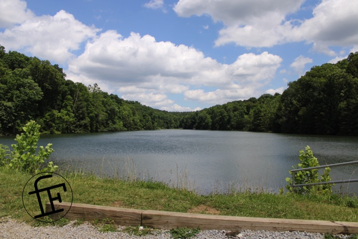

june 2021

back in june i spent a full day hiking at hocking hills national park, one of many beautiful locations in central ohio. While i regularing enjoy the many parks near my home, i dont often travel so far: from where i live, about two hours. This time, however, it was well worth it!
the weather was beautful, not too hot, yet sunny enough for great photos. And i really did spend all day there, nearly 5 hours of hiking, photographing, discovering. The trails were not at all crowded, despite the wonderful weather, and i even got to meet a few cool pups blazing trails with their people.
the photo you see here was is of ceder falls, a gorgeous waterfall which slides its way into a crystal clear pool
this was rose lake, a peaceful break from from the forest where the sky, treeline, and water all meet as one in the distance
altogether, it was a wonderful time! Hard work, but well worth it. Nothing like nature to give you time to think and simply bw. I highly recommend anyone in the area check it out, even if its a bit of a drive, you wont regret it. i know it wont be long before i can no longer resist visiting again
{kind=link}